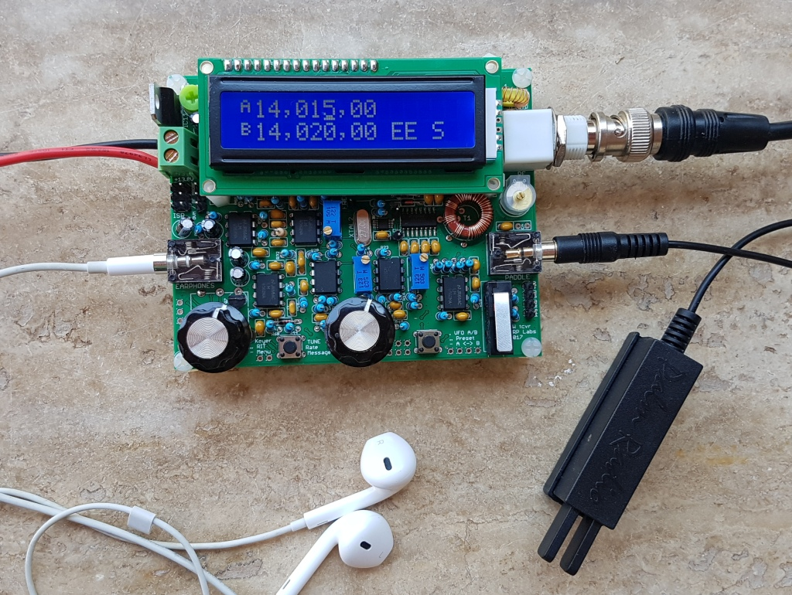
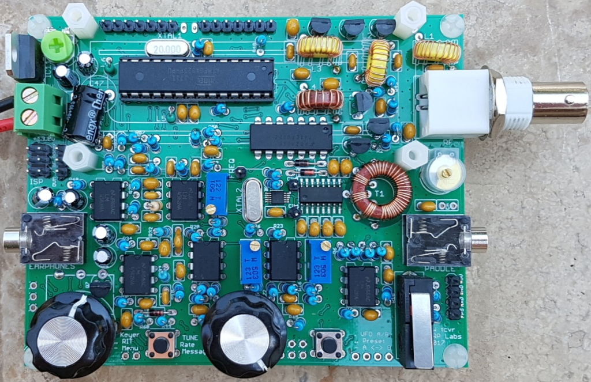
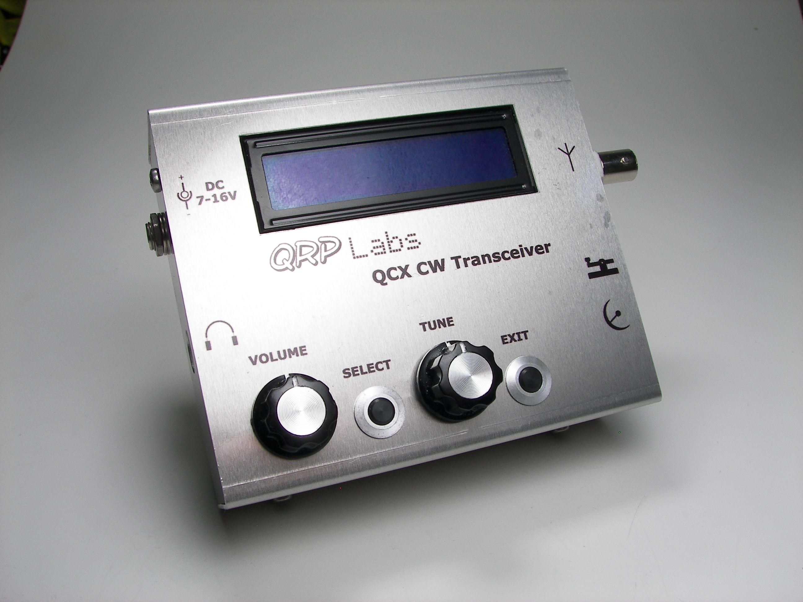

Today is Saturday, 24 November 2018:
A couple of weeks ago, I ordered the kit above, and last night I completed building it. It was probably an eight hour job, perhaps ten, total. I'm a "kit builder" from way, way back. I built kits as a kid, and I also taught myself to solder way back when. For fifty years, I've worked on electronics, radio systems, electronic security systems, I've been an engineer, a college teacher, a military communicator, and a Senior Radio Technician for the President of the United States (Reagan, Bush, worked with Nixon, Ford and Carter as well).
So, after retiring I stopped doing much of anything with electronics, other than on the boat. I've been on the ship for three years and came back here to Colorado to bring the wife for chemotherapy. To pass some time, I decided to build a couple of kits including this one and the S-Pixie.
I present pictures of the build and a
quick informational statement at the end. Click on the link to
see each one. They are served from another system, so that we
don't use a lot of qsl.net bandwidth.
Please
email me at n0njy@qsl.net about broken links,
thanks!
All
Site material © N0NJY,
Rick
Donaldson,
1997-2018
{kind=link}
{kind=link}
{kind=link}